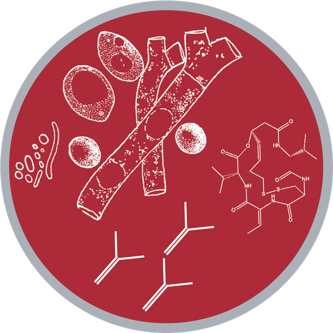

Biosensors and cell factories, built from new microbes.
We use genomics, synthetic biology, and metabolic engineering to design and build biosensors and cell factories.

Research Areas
Organism OnboardingWe build the genomic foundation and modular parts that make a new host engineerable.
Metabolic EngineeringWe engineer these hosts, using modular parts libraries and combinatorial pathway engineering, to overproduce a target molecule.
Genetic CircuitsWe have developed a fungal-bacterial system that can send signals centimeters underground.
BiofoundriesWe integrate genome sequencing into strain development to verify the accuracy of genetic engineering.